Part 1
Removal
Engine removal is not required for this procedure.
CAUTION:
- Use fender covers to avoid damaging painted surfaces.
- To avoid damaging the cylinder head, wait until the engine coolant temperature drops below normal temperature (20°C [68°F]) before removing it.
- When handling a metal gasket, take care not to fold the gasket or damage the contact surface of the gasket.
- To avoid damage, unplug the wiring connectors carefully while holding the connector portion.
NOTE:
- Mark all wiring and hoses to avoid misconnection.
- Turn the crankshaft pulley so that the No. 1 piston is at TDC (Top dead center).
1. Disconnect the battery negative terminal.
2. Remove the RH front wheel.
3. Remove the RH under cover.
4. Remove the engine cover.
5. Remove the air duct and the air cleaner assembly.
6. Loosen the drain plug, and drain the engine coolant. Remove the radiator cap to help drain the coolant faster.
7. Disconnect the radiator upper hose and lower hose.
8. Disconnect the wiring connectors and harness clamps, and then remove the wiring and protectors from the cylinder head and the intake manifold.
(1) The intake OCV (Oil control valve) connector (A)

(2) The exhaust OCV (Oil control valve) connector (A)

(3) The alternator connector (A)

(4) The ignition coil connectors (A)

(5) The intake CMPS (Camshaft position sensor) connector (A)
(6) The exhaust CMPS (Camshaft position sensor) connector (B)

(7) The injector connectors (A)

(8) The front and/or rear HO2S (Heated oxygen sensor connectors (A)
[ULEV]

[SULEV]

(9) The condenser connector (A)

(10) The PCSV (Purge control solenoid valve) connector (A)

(11) The ECTS (Engine coolant temperature sensor) connector (A)

(12) The VIS (Variable Intake System) connector (A)

(13) The MAPS (Manifold absolute pressure sensor) & IATS (Intake air temperature sensor) connector (A)

(14) The ETC (Electronic throttle control) connector (A)

(15) The VCMA (Variable charge motion actuator) connector (A)

9. Disconnect the brake booster vacuum hose (A) and the heater hoses (B).

10. Disconnect the fuel hose (A) and PCSV (Purge control solenoid valve) hose (B).

11. Remove the injector & rail assembly (A).

12. Remove the intake and exhaust manifold.
13. Remove the timing chain including the drive belt, the cylinder head cover, the alternator and the timing chain cover.
14. Remove the vacuum pipe (A).

15. Remove the condenser (A).

16. Remove the PCSV bracket (A).

17. Remove the intake CVVT assembly (A) and exhaust CVVT assembly (B).

NOTE:
When removing the CVVT assembly bolt, hold the camshaft with a wrench to prevent the camshaft from rotating.

18. Remove the camshaft.
(1) Remove the camshaft bearing cap (A) by loosening the bolts in the sequence as shown.

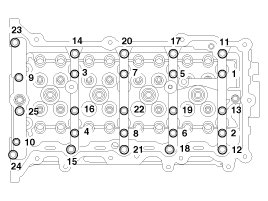
(2) Remove the camshafts (A).

19. Remove the cam carrier (A).

20. Remove the HLA (Hydraulic lash adjuster) (A) and the swing arm (B).

NOTE:
The HLA and swing arm should be kept together as pairs during storage after removal and reinstallation.
21. Disconnect the bypass hose (A).
22. Unfasten the heater pipe mounting bolts (B).

23. Remove the water temperature control assembly.
24. Remove the oil control adapter (A) with the gasket (B).

25. Remove the intake OCV (Oil control valve) (A).

26. Remove the exhaust OCV (Oil control valve) (A).

27. Remove the rear engine hanger (A).

28. Remove the spark plugs (A).

29. Remove the cylinder head.
(1) Using bit socket (12PT), uniformly loosen and remove the cylinder head bolts, in several passes, in the sequence as shown.

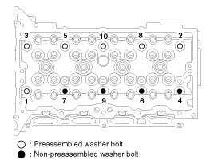
CAUTION:
Head warpage or cracking could result from removing bolts in an incorrect order.
(2) Lift the cylinder head (A) from the dowels on the cylinder block and place the cylinder head on wooden blocks on a bench.
CAUTION:
Be careful not to damage the contact surfaces of the cylinder head and cylinder block.
(3) Remove the cylinder head gasket (B).

Disassembly
NOTE:
Identify, valves and valve springs as they are removed so that each item can be reinstalled in its original position.
1. Remove the valves.
(1) Using the SST (09222-3K000, 09222-3K100), compress the valve spring and remove the retainer lock (A).
NOTE:
When installing the SST, insert the front support (A) directly into the bolt hole on the cylinder head.

CAUTION:
Do not press valve retainer more than 12 mm (0.47 in.).
(2) Remove the spring retainer (B).
(3) Remove the valve spring (C).
(4) Remove the valve (D).
(5) Using needle-nose pliers, remove the valve stem seal (E).
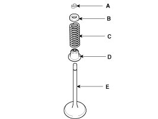
NOTE:
Do not reuse the valve stem seals.
Inspection
Cylinder Head
1. Inspect for flatness.
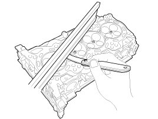
Using a precision straight edge and feeler gauge, measure the contacting surface of the cylinder block and the manifolds for warpage.
Flatness of cylinder head gasket surface:
Less than 0.05 mm (0.0020 in.) for total area
Less than 0.02 mm (0.0008 in.) for a section of 100 mm (3.9370 in.) X 100 mm (3.9370 in.)
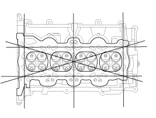
Flatness of manifold mounting surface:
Less than 0.10 mm (0.0039 in.)
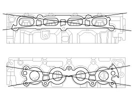
2. Inspect for cracks.
Check the combustion chamber, intake ports, exhaust ports and cylinder block surface for cracks. If cracked, replace the cylinder head.
Valve And Valve Spring
1. Inspect valve stems and valve guides.
(1) Using a caliper gauge, measure the inside diameter of the valve guide.
Valve guide inner diameter
Intake: 5.500 - 5.512 mm (0.21654 - 0.21701 in.)
Exhaust: 5.500 - 5.512 mm (0.21654 - 0.21701 in.)
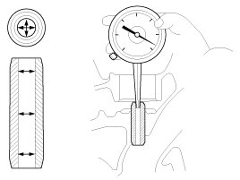
(2) Using a micrometer, measure the diameter of the valve stem.
Valve stem outer diameter
Intake: 5.465 - 5.480 mm (0.21516 - 0.21575 in.)
Exhaust: 5.458 - 5.470 mm (0.21488 - 0.21535 in.)
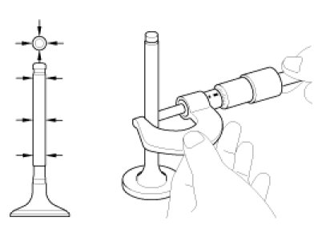
(3) Subtract the valve stem diameter measurement from the valve guide inside diameter measurement.
If the clearance is greater than specification, replace the valve or the cylinder head.
Valve stem-to-guide clearance
[Standard]
Intake : 0.020 - 0.047 mm (0.00079 - 0.00185 in.)
Exhaust : 0.030 - 0.054 mm (0.00118 - 0.00213 in.)
2. Inspect the valves.
(1) Check the valve is ground to the correct valve face angle.
(2) Check that the surface of the valve for wear.
If the valve face is worn, replace the valve.
(3) Check the valve head margin thickness.
If the margin thickness is less than specification, replace the valve.
Margin
[Standard]
Intake: 1.30 mm (0.0512 in.)
Exhaust: 1.26 mm (0.0496 in.)
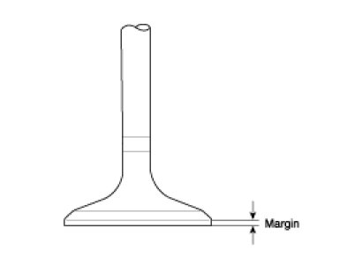
(4) Check the valve length.
Valve length
[Standard]
Intake: 102.22 mm (4.0244 in.)
Exhaust: 104.04 mm (4.0961 in.)
[Limit]
Intake: 101.97 mm (4.0146 in.)
Exhaust: 103.79 mm (4.0862 in.)
(5) Check the surface of the valve stem tip for wear.
If the valve stem tip is worn, replace the valve.
3. Inspect the valve seats and the valve guides.
(1) Check the valve seat for evidence of overheating and improper contact with the valve face.
If the valve seat is worn, replace the cylinder head.
(2) Check the valve guide for wear.If the valve guide is worn, replace the cylinder head.
4. Inspect the valve springs.
(1) Using a steel square, measure the out-of-square of valve spring.
(2) Using a vernier calipers, measure the free length of valve spring.
If the free length is not as specified, replace the valve spring.
Valve spring
[Standard]
Free height: 45.93 mm (1.8083 in.)
Out-of-square : Less than 1.5°
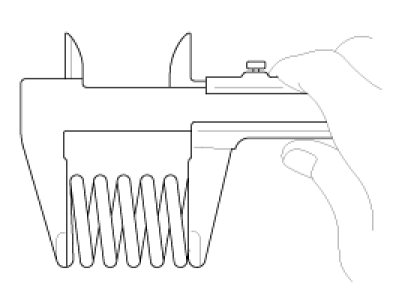
Camshaft
1. Inspect the cam lobes.
Using a micrometer, measure the cam lobe height.
If the cam lobe height is less than specification, replace the camshaft.
Cam height
Intake: 39.0 mm (1.5354 in.)
Exhaust: 38.7 mm (1.5236 in.)
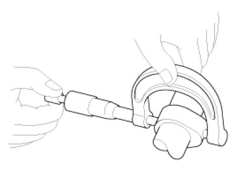
2. Check the surface of the camshaft journal for wear.
If the journal is worn excessively, replace the camshaft.
3. Inspect the camshaft journal clearance.
(1) Clean the bearing caps and camshaft journals.
(2) Place the camshafts on the cylinder head.
(3) Lay a strip of plastigage across each of the camshaft journal.
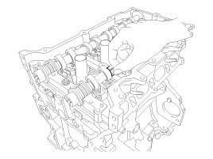
(4) Install the bearing caps and tighten the bolts with specified torque.
Tightening torque
M6 bolts:
11.8 - 13.7 N.m (1.2 - 1.4 kgf.m, 8.7 - 10.1 lb-ft)
M8 bolts:
18.6 - 22.6 N.m (1.9 - 2.3 kgf.m, 13.7 - 16.6 lb-ft)
CAUTION:
Do not turn the camshaft.
(5) Remove the bearing caps.
(6) Measure the plastigage at its widest point.
If the oil clearance is greater than specification, replace the camshaft. If necessary, replace the bearing caps and cylinder head as a set.